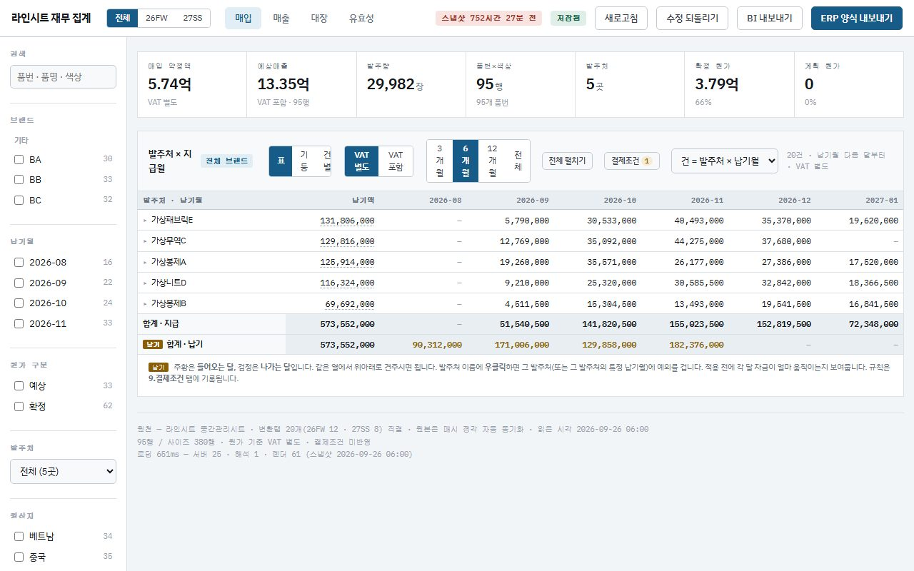
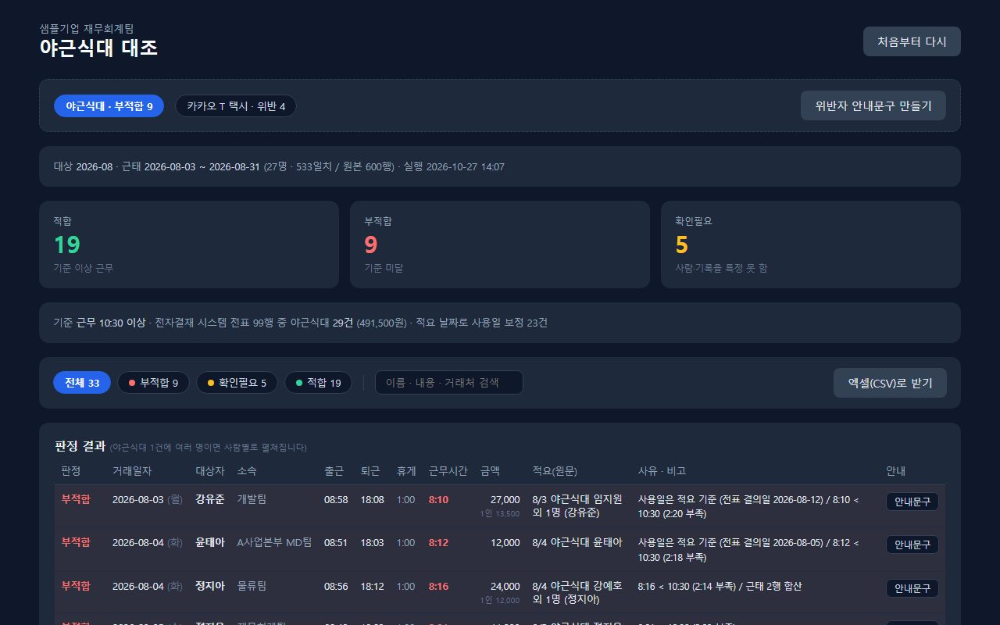
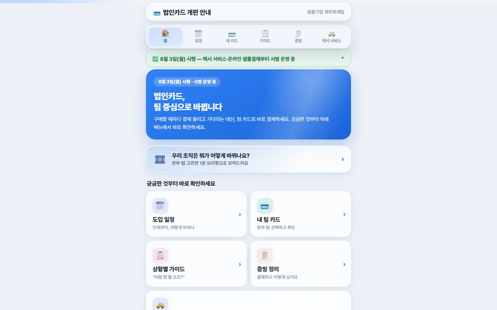

이번 달 자금이 버티는지, 파일을 열지 않고 답하기.
자금 현황·가결산·정산이 각각 다른 파일에 있어 예측은 사람이 매번 다시 계산했습니다. 원천을 하나로 모으고 예측을 매일 자동으로 돌렸습니다.
자금 대시보드 · 잔액·수금 예측·생산대금
원천 15테이블을 매일 동기화, 열 때마다 체크섬 7종으로 원천과 대조. 예측이 바뀌면 사유가 기록으로 남습니다.
시즌·부서별 영업·잉여현금흐름
자금 원천을 별도 DB로 옮겨 시즌과 부서 축으로 현금흐름을 산출. 26SS 파일럿, 컨펌 시트로 부서장 승인 흐름.
채널 원가율 · 공헌이익
매출을 총액 기준으로 환산해 채널을 같은 축에 올려 비교. 고정·변동비는 예측용·분석용 2체계로 판정 규칙을 고정.
투자계약 의무를 자금계획에 연결
계약 조항을 긴급/정기/이벤트 의무로 분류하고 상환권이 열리는 시점을 타임라인으로 자금계획과 연결.
흩어진 파일을 하나의 흐름으로.
스타트업엔 재무 시스템이 없었습니다. 구글시트·엑셀·ERP 추출본을 정본 하나로 모으고, 상품 계획 → 발주 → 입고 → 매입 원가 → 자금이 같은 품번 체계 위에서 돌게 만들었습니다.
결산 원천 단일화
회계 전표의 모든 분개라인을 정본으로 정규화하고 계정 81개를 유형·현금흐름으로 매핑. 새 계정이 나타나면 적재가 멈춰 임의 분류를 막습니다. 직접법 현금흐름 = 통장 순증감.
월 매입 마감 앱
발주↔입고 대사, 수입 부대비용 배부, 필증 검증, 결재를 한 흐름으로. 예외만 사람이 봅니다.

상품 계획표(라인시트) 표준화
부서마다 다른 양식 5종을 공통 필드 13개·키 3계층으로 통일, 매입 약정·자금 소요로 바로 읽히는 집계 앱.
전사 정보 흐름 설계
계획이 자금·실적으로 이어지는 경로를 한 장으로 그리고, 생산·재무가 같이 쓰는 협업 방(그룹 8·상태 5·공유 뷰 4)과 "하나의 시스템" 목업으로 방향을 합의.
매달 같은 기준으로.
판관비 분류가 담당자마다 달라 월별 비교가 어려웠고, 일회성 손익이 정상 손익에 섞였습니다. 한 체계로 고정했습니다.
판관비 7대 분류, 비경상 분리
지급수수료를 판매성·관리성으로 분해. 비경상 항목을 걷어낸 정상 손익을 수식 연동 한 장 보고서로. 보고서 상단에 결론과 검증식이 먼저 오고 표는 뒤로.
같은 정의로 매달
EBITDA·마진·매출 대비 비율이 같은 정의로 나옵니다. 상반기 실적 분석은 원천→배부→지표→피벗 수식 체인으로 재현 가능하게.
판단 기준부터 재현 가능하게.
근거가 문서로 남아 있지 않아 금액이 바뀔 때 이유를 설명하기 어려웠습니다. 감사인이 반드시 근거를 확인하는 항목입니다.
NRV 시뮬레이터
가정을 움직이면 전 품번 충당금이 즉시 재계산됩니다.
판단 15항목, 7라운드
에이징 구간·시즌 판별·계절지수·순실현가치 추정·예외 처리를 항목별 대안과 채택 근거로 확정. 다른 AI 모델을 검토자로 세워 교차검증.
이전 확정본 원 단위 재현
최종본이 이전 확정본을 원 단위까지 재현하는지 확인한 뒤에만 확정. 시나리오 비교가 회의 중에 끝납니다.
검증식 하나로, 예외만 사람이.
채널마다 다른 정산서, 규정과 대조해야 하는 경비. 반복 확인을 기계에 넘기고 사람은 예외만 봅니다.
정산서 입금액 = ERP 실판매 − 수수료 − 반품 ± 상시차이
위탁 34채널 전부 원 단위로 맞는지 확인. 남은 차이 3건은 원인을 규명해 회계처리 방침을 정했습니다.
파트너사 제공 방식 안에서 자동화
결제대행 3사 정산은 매일 수집·정규화해 단일 저장소에 적재, 대사 원천탭을 자동 생성합니다.

경비 자동 판정
근태와 카드 내역을 사람별로 대조해 규정 충족을 판정, 안내문구까지 생성.

법인카드 통제 개편
실물 카드 축소와 가상카드 전환 설계, 관리 대장 정비.
실제로 돌아가는 화면 6.
샘플 데이터로, 계산·판정 로직은 실제 구현과 동일합니다. 실운영 앱은 서버 코드까지 브라우저에서 그대로 실행됩니다.
월 매입 마감 앱
입고 검수 → B/L 연결 → 부대비용 배부 → 취득원가
NRV 시뮬레이터
가정을 움직이면 전 품번 즉시 재계산
라인시트 재무 집계
매입 약정 기준 집계 · 결제조건 · 유효성
자금 대시보드
잔액 추이 · 수금 예측 · 체크섬 7종
법인카드 개편
정책 변경 전후 · 한도 근거 · 상황별 가이드
야근식대 대조
근태 vs 카드 사람별 판정, 안내문구
분석·설계 산출물 7개
일하는 방식.
위 프로젝트에 공통으로 적용한 기준
차이는 덮지 않고 분류
원인이 지정된 차이는 다음 달에 다시 조사하지 않습니다. 마감이 매달 새로 하는 조사에서, 기준에 맞춰 확인하는 작업으로 바뀝니다.
검증 없이 편해지지 않는다
자동으로 나온 숫자는 원천 합계와 대사하고, 재계산해도 같은 값인지 확인한 뒤 씁니다. 원 단위까지 재현되지 않으면 확정하지 않습니다.
판단은 문서로, 반복은 기계로
기준이 필요한 항목은 대안과 채택 근거를 남겨 사람이 판단하고, 반복 확인만 자동화합니다. 그래야 감사·상급자에게 설명이 됩니다.
- 대사 파일 정규화·건별 매칭 같은 반복 확인
- 초안 작성(보고서 골격, 검증 스크립트)
- 판단 항목표에 대한 반박·교차검증(다른 모델을 검토자로)
- 화면·시스템 조작의 반복 구간
- 회계정책·충당금률·분류 기준의 채택과 승인 요청
- 차이의 원인 판정과 회계처리 방침
- 원천 합계·재계산·이전 확정본 재현이 맞는지 최종 확인
- 회사 정보의 사용 범위. 정책 범위 밖 접근은 하지 않음
작업 기준(파일 버전 규칙, 엑셀 품질 바, 금지 목록)을 문서로 고정해 모든 작업이 같은 기준을 따르게 하고, 사용량은 주간 운영일지로 남깁니다.
전체 프로젝트.
| 프로젝트 | 한 일과 결과 |
|---|---|
| 월 가결산 손익 자동화 | 판관비 7대 분류 재편, EBITDA·마진·매출 대비 비율 동시 산출 |
| 비경상손익 분리 요약 | 일회성 항목을 걷어낸 정상 손익을 수식 연동 한 장 보고서로 |
| 고정·변동비 분류 기준표 | 예측용·분석용 2체계 병존, 판정 순서 규칙화 + 미판정 리포트 |
| 결산 원천 단일화 | 전표 분개라인을 정본으로 정규화, 계정 81개 매핑 규칙과 예외 차단 |
| 직접법 현금흐름 검증 | 산출값과 통장 순증감 일치, 혼합 전표 순액 판정 규칙 반영 |
| 시즌·부서별 현금흐름 | 영업·잉여현금흐름을 시즌·부서 축으로 산출, 컨펌 시트 흐름 |
| 상반기 실적 분석 워크북 | 원천→배부→지표→피벗 수식 체인, 브랜드·안분 기준 통일 |
| 채널 원가율·공헌이익 분석 | 매출을 총액 기준으로 환산해 채널을 같은 축에서 비교 |
| 프로젝트 | 한 일과 결과 |
|---|---|
| 위탁매출 34채널 건별 대사 | 표준 대사 양식·건별 매칭, 상시 차이 4유형 분리, 원 단위 일치 확인 |
| 대형 유통 정산구조 규명 | 차수별 분할지급·기준 미달 미지급·프로모션 공제가 차액의 정체임을 확인 |
| 정산서 수집 자동화 | 파트너사 제공 방식(API·다운로드) 안에서 월 수집을 자동화 |
| 결제대행 정산 자동수집 | 3사 정산을 매일 수집·정규화해 단일 저장소 적재, 대사 원천탭 자동 생성 |
| 월별 결제대행 대사 | 자동 수집 DB와 수기 엑셀을 주문번호별 순액으로 대사 |
| 취소·합수거 자동 상계 | 주문자 단위 합이 0이 되는 조합을 허용오차 내에서 자동 상계 |
| 실판매 vs 인식매출 차이 규명 | 주문 원본 건별 대조, 반품 시점차·협업 배분·할인율로 유형화 |
| 스마트스토어·품의·플랫폼 대사 양식 | 월 대사 양식 3종 설계, 검증식·전월 취소 보정, 이월 검증 |
| 자사몰 수탁정산 웹앱 | 결제대행 건별과 주문·취소·배송을 엔진으로 정산·전표 생성 (설계 확정) |
| 프로젝트 | 한 일과 결과 |
|---|---|
| NRV 산정 로직 재설계 | 판단 15항목 분해·근거 문서화, 7라운드 교차검증, 이전 확정본 원 단위 재현 |
| NRV 시뮬레이터 | 가정 변경 시 즉시 재계산, 확정 로직과 동일 소스 |
| 재고 에이징 기준 정립 | 수불부 DB화·전년 로직 이식, 쓰면 안 되는 원천을 함정으로 기록 |
| 매출원가 건별 재구축 | 건별 대조 후 재무상태표 재고와 일치 확인, 브릿지 문서화 |
| 월 매입 마감 앱 | 발주↔입고 대사·부대비용 배부·필증 검증·결재를 한 흐름으로 |
| 입고·부대비용 대사 DB | 원천만 적재하고 배부는 뷰로 계산, 세트 품번 이중계산 차단 |
| 상품 계획표(라인시트) 표준화 | 양식 5종 분석 → 공통 필드 13·키 3계층 → 통일안 확정, 재무 집계 앱 |
| 프로젝트 | 한 일과 결과 |
|---|---|
| 세금계산서 대사 | 매칭 키 설계로 계산서·원장·발주를 묶어 대조, 오판 방지 기준 명시 |
| 부가세 신고자료·전자신고 | 산출 절차와 기간 지정 규칙을 문서로 고정, 재제출 순서 정리 |
| 이벤트 경품 원천징수 기준 | 기타소득 과세 기준과 대납 환산을 품의 예산 기준으로 정리 |
| 금융기관 제출자료 체계 | 기관별 서류 목록화, 수집 현황·갱신 시점 관리 |
| 법인카드 운영 개편 | 실물 축소 + 가상카드 전환 설계, 한도 정책, 관리 대장 20열 체계 |
| 야근식대 자동 판정 | 근태 세그먼트 합산 규칙으로 기준 충족 판정, 예외 사유 자동 기재 |
| 투자계약 의무 관리 | 계약 조항을 긴급/정기/이벤트 의무로 분류, 상환 시점을 자금계획과 연결 |
| 프로젝트 | 한 일과 결과 |
|---|---|
| 전사 회계·전자결재 가이드 | 28페이지 작성·웹앱 배포, 반복 문의를 문서로 흡수 |
| 자금 대시보드·업무 흐름도 | 자금·현금흐름·업무 흐름을 상시 조회 가능한 웹앱으로 |
| 회계 원천 DB | 매출·원가·입고·마케팅출고 적재/조회 체계 |
| 작업 기준 문서와 검증 절차 | 파일 버전·엑셀 품질 바·금지 목록을 기준 문서로, 교차검증 절차를 템플릿화 |
| 팀 온보딩 문서 | 도구 사용 방식·보안 점검·용어 정리를 팀 공유용으로 작성 |
지표는 건수·구조만 적었습니다. 금액·거래처·내부 시스템 정보는 포함하지 않습니다.
담당 업무와 도구.
| 영역 | 담당 내용 | 주기 |
|---|---|---|
| 재무기획 | 현금흐름 예측·자금 대시보드, 시즌·부서별 계획, 채널 수익성·고정변동비, 투자계약 의무 관리 | 월 / 시즌 |
| 결산 | 월 가결산·손익계산서, 판관비 분류 체계, 비율 지표, 비경상손익 분리 | 월 |
| 시스템 | 결산 원천 단일화, 매입 마감·라인시트·자금 앱 설계와 운영, 전사 정보 흐름 설계 | 상시 |
| 매출·정산 대사 | 위탁 34채널, 결제대행 3사, 차이 규명·문서화, 수집 자동화 운영 | 월 / 일 |
| 재고·매입·매출원가 | 평가충당금, 재고 에이징, 월 매입 마감, 매출원가 건별 검증, 수불부 | 월 / 반기 |
| 세무·감사 | 부가세 신고자료·전자신고, 세금계산서 대사, 외부감사·금융기관 제출 | 분기 / 수시 |
| 경비·자산 | 법인카드 운영·한도 정책·관리 대장, 경비 지급 판정, 영수증 관리 | 월 |
| 도구 | 회계·물류 ERP, 엑셀 수식 체인·동적 배열, Python(pandas·openpyxl)·SQL·로컬 DB, Google Apps Script 웹앱·브라우저 자동화·HTML 리포트, AI 에이전트 반자동 작업·모델 간 교차검증 | 상시 |
자주 받는 질문.
회계 담당자가 왜 기획과 시스템까지 하나요?
스타트업엔 재무기획 담당도, 재무 시스템도 따로 없었습니다. 결산을 하다 보면 "다음 달 자금은 버티는가", "이 시즌 발주가 자금에 어떻게 닿는가"를 누군가 답해야 했고, 그 답은 흩어진 파일로는 나오지 않았습니다. 그래서 원천을 하나로 모으는 시스템을 먼저 만들고 그 위에서 예측과 계획을 세웠습니다. 기준을 정하는 일과 그 기준을 코드로 옮기는 일을 같이 한 이유도 같습니다.
자동화한 숫자를 어떻게 믿습니까?
세 가지를 확인한 뒤에만 씁니다. ① 원천 데이터 합계와 결과물 합계가 원 단위까지 일치하는지 ② 다시 계산해도 같은 값이 나오는지 ③ 이전 확정본을 재현하는지. 하나라도 안 맞으면 원인을 규명할 때까지 확정하지 않습니다.
AI가 만든 결과를 그대로 쓰나요?
아니요. 판단이 필요한 항목은 표로 분해해 근거를 적고, 다른 모델을 검토자로 세워 교차검증한 뒤 사람이 확정합니다. AI는 반복 확인과 초안에 쓰고, 회계정책·분류 기준·차이의 회계처리는 제가 결정하고 승인을 받습니다.
본인이 없으면 자동화는 누가 유지하나요?
모든 도구는 규칙을 시트나 문서로 꺼내 두어 코드를 몰라도 기준을 고칠 수 있게 했고, 절차·함정·검증 방법을 팀 문서로 남겼습니다. 도구가 멈춰도 같은 대사 양식으로 수작업이 가능합니다.
이 페이지에 실제 숫자가 없는 이유
재직 중인 회사의 금액·거래처·내부 시스템 정보는 공개하지 않습니다. 성과는 건수와 구조로만 적었고, 데모는 전부 생성된 샘플 데이터로 동작합니다. 상세 내용은 면접에서 회사 정보를 침해하지 않는 범위로 설명드리겠습니다.